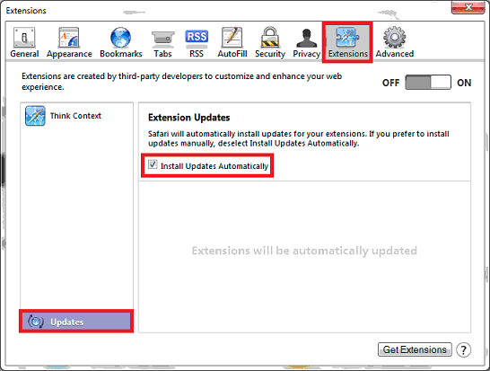

Welcome to thinkContext, the web browser extension which adds contextually relevant, politically progressive information to your web browsing. For more information visit our website at thinkcontext.org or follow us on Twitter.
As you browse the web thinkContext consults several progressive data sources and if it finds anything relevant to what you are looking at it will unobtrusively add that information right into the page. If you'd like to configure which data sources thinkContext uses you may do so through the options page.
Important for Safari users! Make sure you set Safari to automatically update extensions so that when we add new features you get them right away. Open up Safari's preferences (from the "Safari" menu list in the upper left for Mac or from the "Edit" or gear menu items on Windows), then select the "Extensions" item from the list across the top. Then click on "Updates" from the lower left and then check the check box next to "Install updates automatically". See below.
